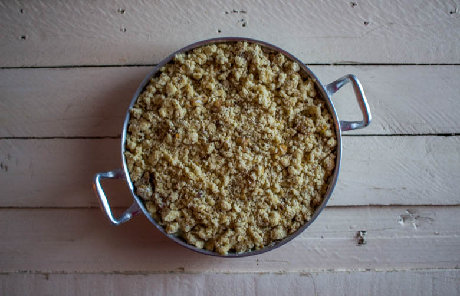
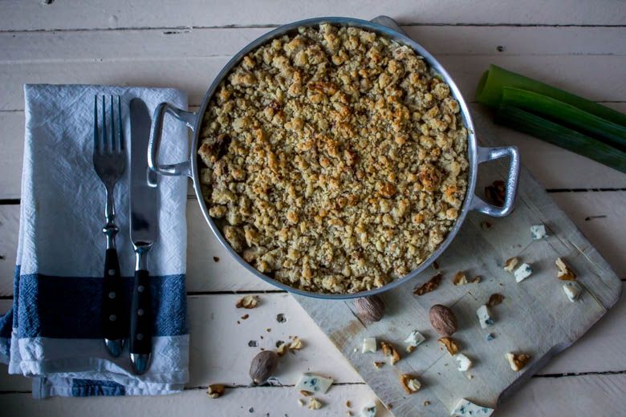
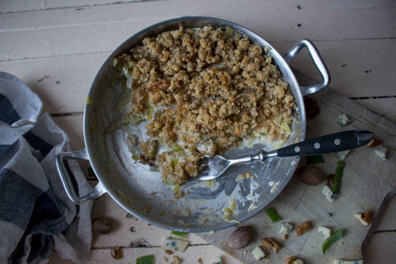

Crumble salé aux poireaux fourme d’Ambert et noix

Un petit crumble salé ça vous tente ?
Le poireau est un des légumes que j’apprécie énormément (à condition qu’il soit bien cuisiné !!). Bien qu’il se récolte en été c’est tout de même une des saveurs que j’associe tout particulièrement à l’automne et à l’hiver dans des plats chauds et réconfortants.
Aujourd’hui je vais vous parler de mon crumble salé aux poireaux dans lequel j’ajoute de la fourme d’Ambert et des noix (un délice !!) J’ai fait pour la première fois cette recette quand j’étais étudiante et maintenant elle ne me quitte plus… L’association fourme d’Ambert-poireaux est ultra connue et pour cause c’est une tuerie !!!
Le crumble a été inventé pendant la seconde guerre mondiale en remplacement des tartes (qui demandaient les mêmes ingrédients mais en quantités plus importantes). D’origine britannique, ce gâteau est normalement constitué d’une pâte friable (la pâte à crumble) qui recouvre une couche de fruits. Son nom lui vient de l’anglais « crumbly » qui signifie « friable » (merci les dicos bien fait sur internet) et depuis il en existe de toutes sortes.
Je n’aime pas trop m’attarder sur l’historique des plats ou raconter trop de blabla inutile mais un court résumé est toujours sympa!
Mon crumble salé trouvera je l’espère une place dans votre cuisine car ce serait vraiment dommage de ne pas l’essayer!! Dans ma recette j’utilise 150 gr de yaourt grec et 40 gr de crème fraiche. Je pense que c’est pour me donner bonne conscience et rendre ce plat plus léger mais vous pouvez n’utiliser que de la crème fraîche cela fonctionne aussi!!!
Pour ceux qui ne tolèrent pas le gluten ou qui veulent le bannir de leur alimentation: supprimer les noix et remplacer la farine par de la farine de châtaigne! C’est excellent et les saveurs se mêlent et s’entremêlent parfaitement bien!
Je vous laisse découvrir sans plus attendre la recette et j’espère qu’elle vous plaira 🙂
Ingrédients
- Farine - 120g
- Beurre - 100g
- Noix - 60g
- Parmesan - 50g
- Poireaux - 400gr (2)
- Fourme d'Ambert - 180g
- Beurre clarifié (ou doux) - 50g
- Yaourt grec - 150g
- Crème fraîche - 40g
- Noix de muscade - 1.5 càc
- Sel et poivre
Instructions
- Enlever la partie verte des poireaux (je laisse tout de même environ 2-3cm)
- Faire 4 entailles courtes sur les côtés des poireaux afin de mieux les nettoyer
- Couper les poireaux en morceaux
- Dans une marmite, mettre le beurre clarifié et les poireaux (vous pouvez mettre du beurre doux, moi je mets du beurre clarifié car je trouve cela plus sain et le petit goût qu'apporte le beurre clarifié est délicieux)
- Couvrir et laisser fondre les poireaux 8min à FEU DOUX
- Pendant ce temps, couper la fourme d'Ambert en petits morceaux. Réserver
- Dans un bol, mélanger le yaourt grec à la crème fraîche
- Ajouter la crème aux poireaux et mélanger
- Ajouter les dés de fourme d'Ambert, salez, poivrez et ajouter la noix de muscade. Mélanger
- Mixer les noix (en garder quelques unes que vous broierez grossièrement pour garder un peu de croquant)
- Dans un récipient, verser la farine, les noix et le parmesan
- Ajouter le beurre froid coupé en petit morceaux
- Malaxer avec vos mains pour obtenir une consistance sableuse
- Verser la garniture dans un plat allant au four
- Sur le dessus, ajouter la pâte à crumble
- Enfourner 20 min à 180° (il faut que le dessus soit légèrement doré)



Les tips de la communauté
Le Crumble salé reçoit des commentaires positifs avec appréciation pour l'originalité du mélange sucré-salé. Les saveurs de la fourme d'Ambert sont bien appréciées.
Astuces
- Bien doser le fromage fourme d'Ambert pour équilibrer les saveurs
- Ajouter les noix pour croustillant et saveur supplémentaire
Variantes suggérées
- Remplacer la fourme d'Ambert par un autre fromage bleu si nécessaire
- Utiliser différentes noix ou ajouter d'autres fruits secs